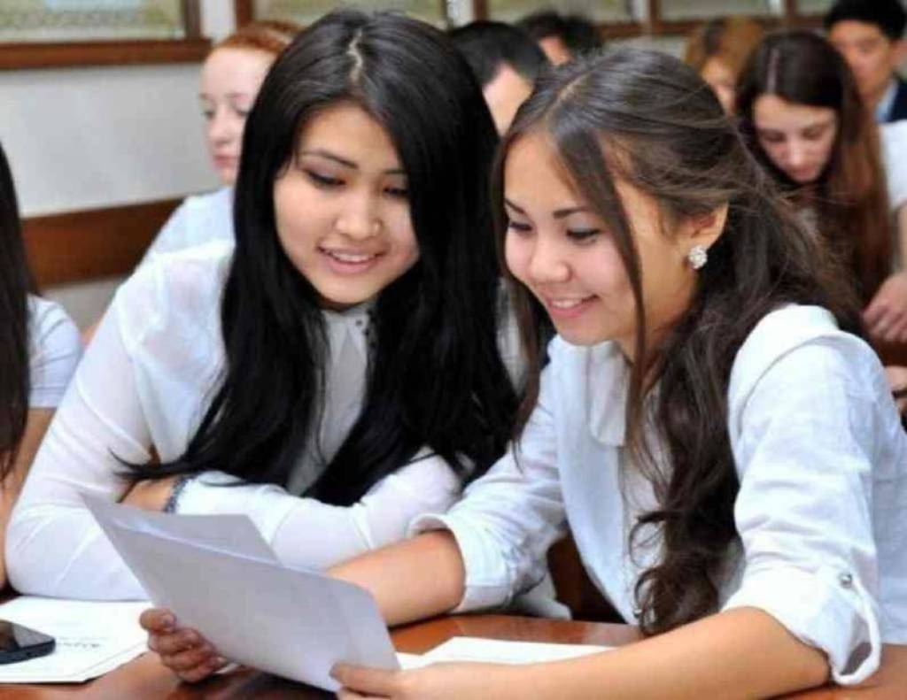
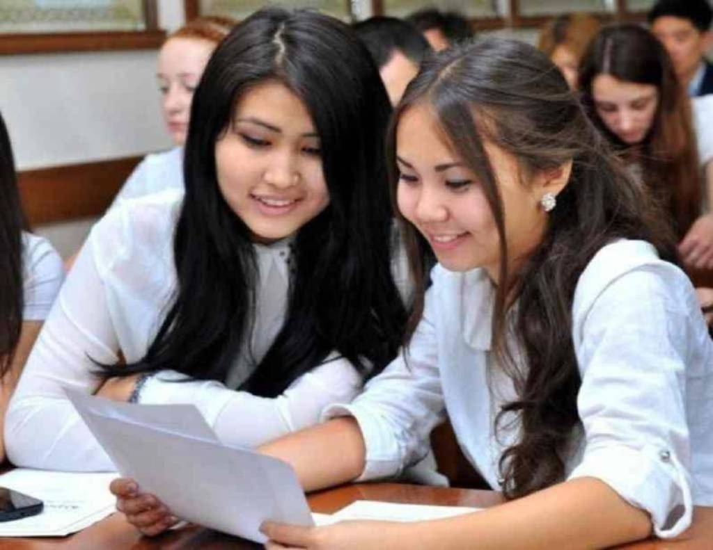

Universitet haqida talabalarning fikri
Talabalar Guliston Universitetini zamonaviy ta'lim tizimi va yuqori malakali o'qituvchilari bilan qadrlashadi. Shuningdek, universitetda ilmiy tadqiqotlar va amaliy mashg'ulotlarga katta e'tibor berilishi talabalar uchun muhim ahamiyatga ega.

Guliston Universiteti talabalarga keng imkoniyatlar yaratib, ularning ilmiy va kasbiy rivojlanishiga hissa qo'shadi. Universitetdagi do'stona muhit va talaba-uqtuvchi o'rtasidagi yaxshi aloqalar talabalarga o'zlarini erkin va qo'llab-quvvatlanayotgan his qilish imkonini beradi.
Ozoda

Guliston Universiteti talabalariga o'qish jarayonida amaliyot vatajriba orttirish imkoniyatlarini taqdim etadi. Universitetda talabalarning ijodiy va sport faoliyatlari uchun ham keng sharoitlar yaratilgan.
Umid

Guliston Universiteti talabalari uchun yuqori sifatli ta'lim olish va zamonaviy o'quv-uslublarini o'rganish imkoniyatlarini taqdim etadi. Universitetda turli fanlar bo'yicha konferensiyalar va seminarlarga qatnashish, ilmiy ishlar bilan shug'ullanish uchun yaxshi sharoitlar mavjud.
Alisher

Guliston Universiteti talabalarini nafaqat akademik bilimlar, balki ijtimoiy mas'uliyat va etika asosida ham tarbiyalaydi. Universitetdagi ko'plab klublar va tashkilotlar t alabalarga o'z qobiliyatlarini namoyish etish va yangi imkoniyatlar yaratishda yordam beradi.
Ruhshona
 
